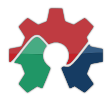

Fabriquer c'est facile et ça
s'apprend !
Avec Fabriques Alternatives, concevez, réparez, apprenez et partagez.
De la fabrication numérique aux savoir-faire traditionnels, tout est source d'inspiration et création.
Rejoignez le mouvement Maker avec nous, dans les Landes, à Mont-de-Marsan.
Ce que nous faisons